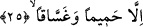

serinletir. Dikkat edilirse görülür ki; susuzluk çeken insan uykuya daldığında susuzluğu
gider. Sükûnet de böyledir. Bilindiği üzere uyku, bir çeşit ölümdür. Dolayısıyla
buradaki “serinlik tatmazlar” ifâdesi “herhangi bir uyku tatmazlarki istirahate
kavuşsunlar” demektir.
Âyetteki “içilecek bir şey” diye tercüme edilen “şaraben” kelimesi ile onların
susuzluklarını dindiren şey kasdedilmektedir.
25. Ancak kaynar su ve irin tadarlar.
Buradaki “illâ”, “lâkin” anlamındadır. “Hamîm” ise “harâreti zirveye çıkmış çok
kaynar sıcak su” demektir. Bu öyle bir sudur ki yüzüne yakın getirseler, yüzünün etleri
dökülür. Eğer içirseler iç organları ve bağırsakları parça parça olur. “Gassâk”
kelimesinin anlamı “akan şey” demektir ki bununla “cehennemliklerin derilerinden
dökülen şey, onların yaralarından akan irin” kasdedilir.
Allah Teâlâ, o azgınların cehennemde hiç bir şey tatmayacaklarını haber veriyor. Bu
habere göre onlar ne bir serinlik ne de cehennemin sıcaklığını kendilerinden giderecek
herhangi bir rahatlık hissetmezler. Ayrıca susuzluklarını giderecek bir içecek şey de
tatmazlar. Fakat onlar cehennemde sımsıcak su ve irin tadarlar. Âyetteki istisnâ
“munkatı’ istisnâ” olup, kaynar su ve irinin serinlik ve güzel içeceklerden ayrı unsurlar
olduğunu haber verir.
Zeccâc’a göre bu âyetin mânâsı şöyledir: “Azgınlar orada ne bir rüzgar, ne bir gölge
serinliği ne de bir uyku rahatlığı tatmazlar.” Zeccâc’ın bu tefsirine göre âyette geçen
“berd” kelimesi insana rahatlık verecek her şeyin serinliği anlamında kullanmıştır. Buna
göre “ve la şerâben” ifâdesi “soğuk su da tatmazlar” anlamına gelmiş olur. Böylece
âyette önce bir genel ifâde kullanılmış, ardından da bir tahsis getirilmiştir. Çünkü
içilecek şey, insanı rahatlatmakta en mükemmel bir unsurdur. Böylece “berd” ve
“şerab” kelimelerinin ikisi birden “insanı rahatlatan nesne” anlamına kullanılmış olur.
Bu takdirde âyetin devamındaki “hamîmen ve gassakan/kaynar su ve irin” kelimeleri
“berden ve şeraben” kelimelerinden munkatı’ istisnâ yapılmış olurlar.
“Gassak” kelimesi, “zemherir” şeklinde tefsir olunursa bu takdirde “gassak” “şerab”
kelimesinden değil sadece “berd” kelimesinden istisnâ edilmiş olur. Çünkü zemherir,
içilecek bir nesne değildir. Bu takdirde “hamîmen” kelimesi de “şerab” kelimesinden
istisnâ edilmiş olur. Âyette “gassak” kelimesinin sona bırakılması, âyet sonlarındaki ses
uyumunun sağlanması içindir. Birinci tefsir tarzını Peygamberimiz (s.a.)’in şu ifâdesi
desteklemektedir: “Gassak’tan (irinden) bir kovası dünya üzerine dökülecek olsaydı
bu irin bütün dünyadakileri pislerdi.” [231]
“Gassak”, “cehennemliklerin yaralarından akan irin” anlamında tefsir edilecek olursa